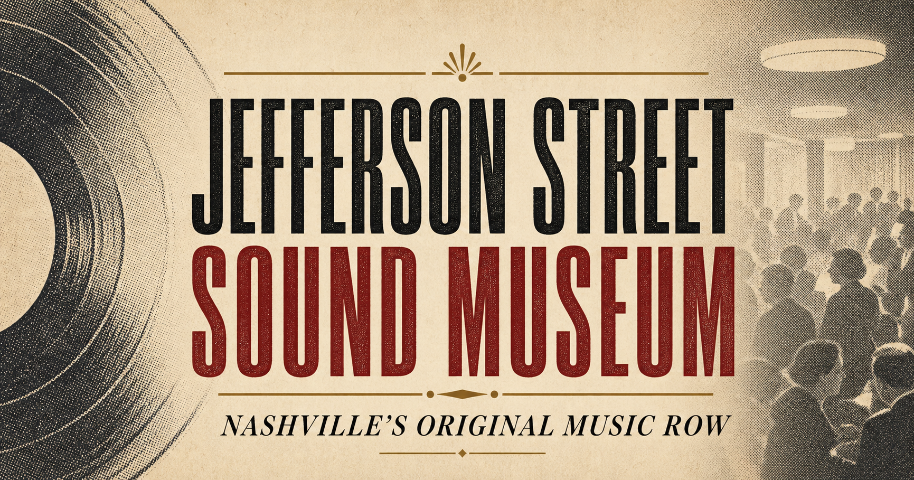

A street finds its sound
Jazz, blues and rhythm & blues spill from clubs, theaters and late-night rooms across North Nashville.

Follow museum events and read Lorenzo Washington’s monthly note from the founder’s desk.
Before Broadway had neon, Jefferson Street had soul.
From the 1940s through the 1970s, Jefferson Street was a vital center of Black music, business and culture. Its clubs welcomed artists who would change American music forever.
Founder and curator Lorenzo Washington created the Jefferson Street Sound Museum to keep that story visible, audible and alive.
Discover the museum →Drop the needle
Jazz, blues and rhythm & blues spill from clubs, theaters and late-night rooms across North Nashville.
Jefferson Street becomes an essential stop for touring Black artists and a proving ground for Nashville talent.
The neighborhood’s stages and gathering places stand beside a community helping reshape the Civil Rights era.
The Museum preserves artifacts, amplifies firsthand stories and welcomes a new generation into the legacy.

History is not behind us.
The Museum welcomes students and visitors from around the world, connecting firsthand stories with education, creativity and neighborhood pride.
2004 Jefferson Street
Nashville, TN 37208
Saturday · 11am–4pm
Tue–Thu · By appointment